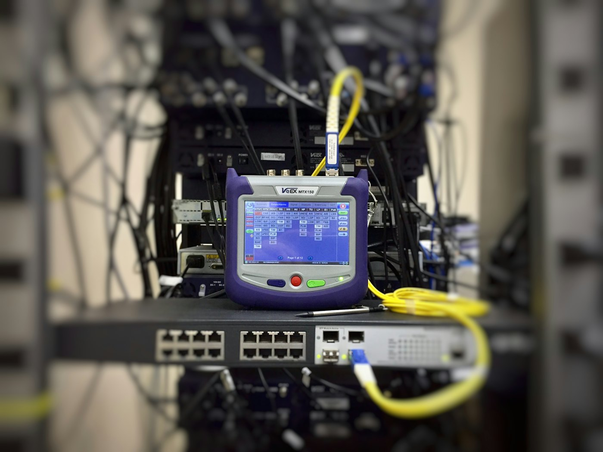
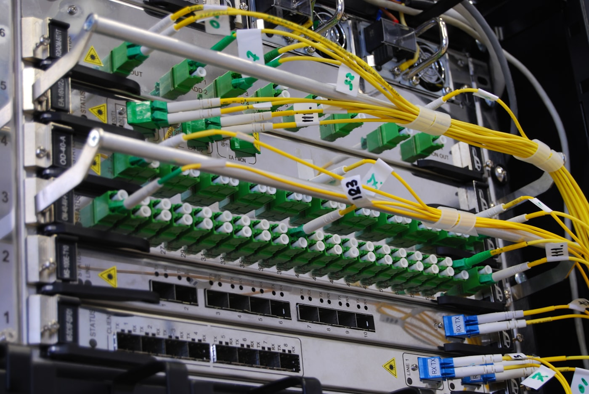

01
Network structured cabling
Copper backbone and horizontal runs for offices, suites, and full floors. Every drop labeled at both ends and recorded on a plan you keep.
Structured cabling · Orlando, Florida
WITS designs and installs structured cabling, fiber, and IT rooms for commercial buildings around Orlando. Thirty years in the field, fifteen running this business, and every run labeled and documented so the next person to open the closet can read it.
Commercial · Offices · New construction

Scope of work
These are the jobs WITS is built around. The rest of the list is part of the same work — it just isn’t what you should call us first for.
01
Copper backbone and horizontal runs for offices, suites, and full floors. Every drop labeled at both ends and recorded on a plan you keep.
02
Single-mode and multimode between closets, floors, and buildings. Terminated, tested, and handed over together with the results.
03
Racks, pathways, grounding, and cable management laid out before anything gets pulled — so the room is still workable in five years.
Also installed
Who this is for
Cabling designed into the build and coordinated with the general contractor’s schedule, rather than squeezed in at the end.
New suites, floor changes, and relocations — including work in buildings that stay occupied while it happens.
Older plant brought up to what the network actually needs now, without tearing out what still works.
Faults traced, bad runs re-terminated, and undocumented installs mapped so the next person is not guessing.
The difference
You should be able to open the closet in five years and still know what every cable does.
Quality workmanship, attention to detail and reliability are what every contractor says. What they mean here is labeling at both ends, test results you are handed, and a record of the plant that outlives whoever installed it.
What you receive
Every run identified at both ends, matching the record.
Certification results for the runs installed, handed over with the job.
A plan of what was installed and where it terminates, that you keep.
The same contact through quoting, install and anything after.

Before we start
Commercial jobs have paperwork before they have cable. These are the things a general contractor or building manager usually asks for, and they get sorted before anyone is on site.
Certificate of insurance issued to the general contractor or building owner on request.
Florida low-voltage licensing details supplied with the estimate.
Badging, induction, working hours and building access agreed before mobilisation.
Written scope agreed in advance, so variations are visible rather than argued about later.
What to expect
01
Tell us the site, the scope, and the timeline you’re working to.
02
We look at the space, the pathways, and what is already in the walls before quoting anything.
03
Scope, materials, and schedule in writing, so you can hold it against anything else on your desk.
04
Installed, tested, labeled, documented. You get the records, not just the cable.
The work
Who you’re dealing with
WITS is small on purpose. The person who walks your site is the person who quotes it and the person you call when something needs looking at again. That is what “personal service” is supposed to mean, and it is the reason the work gets documented the way it does — because we are the ones who come back to it.
Fifteen years running this business in Florida and Colorado, thirty years in the trade before and through it.
Coverage
Service area
Orlando, Florida
Who we work with
Commercial buildings.
Questions
Network structured cabling, fiber optic cabling, and IT room design are the core of it. We also handle data network cabling, access point installation, camera systems, audio/visual cabling, and troubleshooting. If it carries a signal through a commercial building, it is probably on the list — call and ask.
It depends on the size of the site and how much access we get. A single suite is a different job from a floor in an occupied building or a new build still on the schedule. You get a schedule in writing with the estimate, before any work starts, rather than a guess on the phone.
Yes. Tracing faults, re-terminating bad runs, and making sense of an undocumented install is regular work here. Thirty years in the field mostly means having already seen it.
Yes. Occupied floors, live suites and tenanted buildings are normal commercial work. Access windows, noise and after-hours requirements get agreed before we mobilise, not discovered on day one.
No fixed minimum. Small jobs and single-drop calls are worth the phone call — we would rather tell you it is a twenty-minute fix than have you wait on a quote for it.
Yes. Certification results for the runs installed and a record of the plant are part of handover, not an extra. If a previous installer left you without either, that is something we can put right on its own.
Yes. A certificate of insurance can be issued to the general contractor or building owner on request, and licensing details are supplied with the estimate.
Orlando and Central Florida are the main service area. Work elsewhere in Florida and in Colorado is normal — ask, and we will tell you straight whether it makes sense for your job.
Tell us what the building needs. We walk the site, then put the scope, the schedule, and the price in writing.
Phone
(407) 555-0142